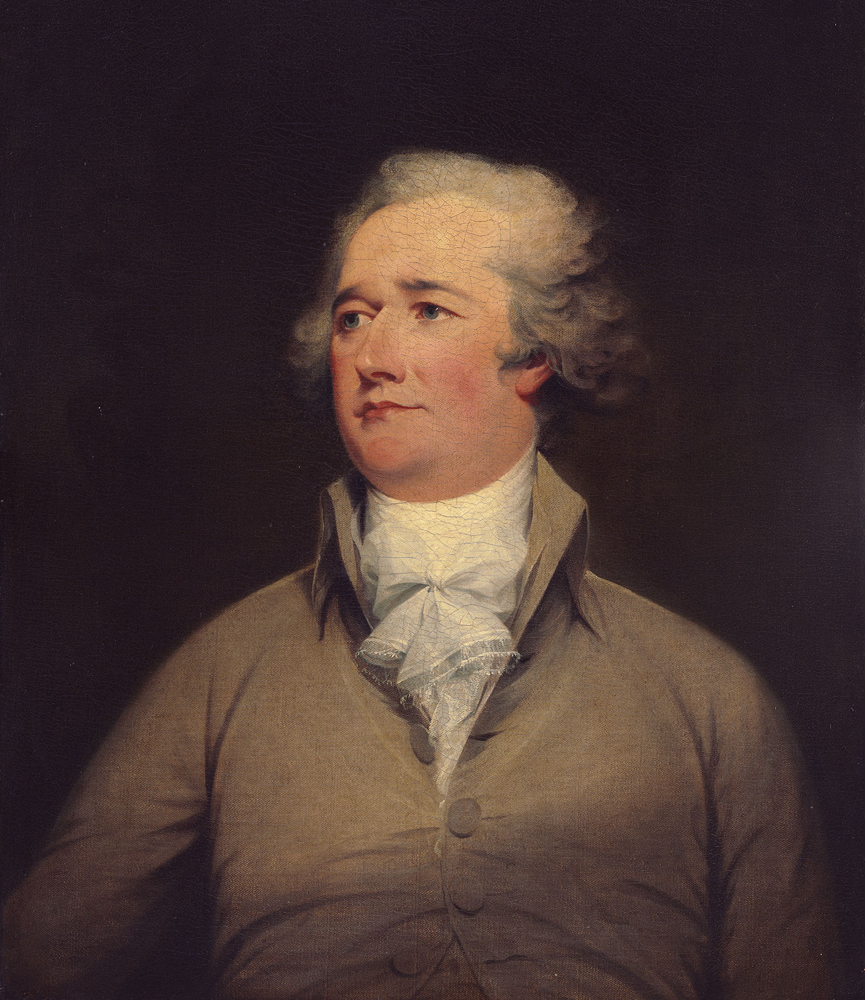

The War
In 1775, after the first engagement of American troops with the British at Lexington and Concord,
Hamilton Field CommandWhile on Washington's staff, Hamilton long sought command |
OriginsAlexander Hamilton was born in the Caribbean. in a city called charlestown the Capital of Saint Kitts and Nevis Alex's father left him when he was about 9 to 13. The Church of England did not allow education to Alexander as his parents were not legaly married Alexander furthered his education with the family library of 34 books. Alex started writing and raised enough money to buy passage on a ship going to new york. this would be the start of his new life |

N/A, N. A. N. A. (2021, September 22). Alexander Hamilton. |